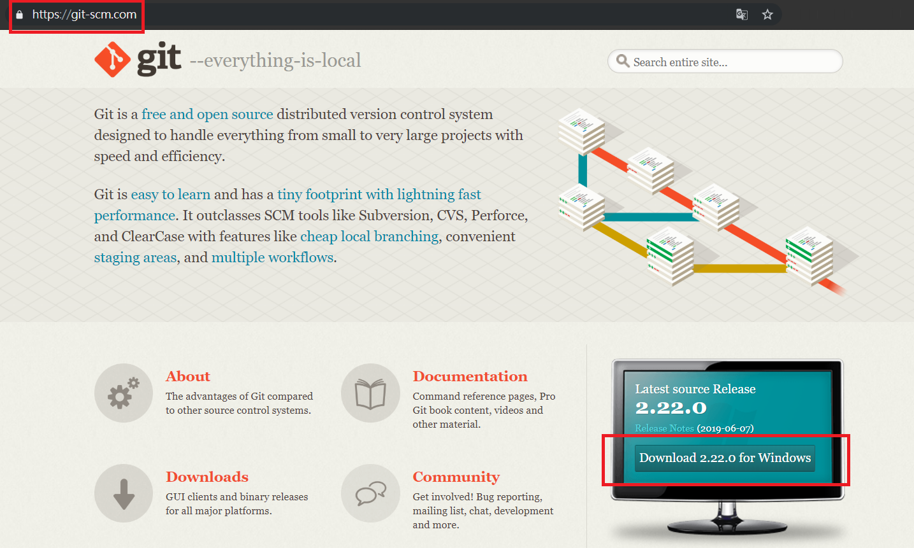
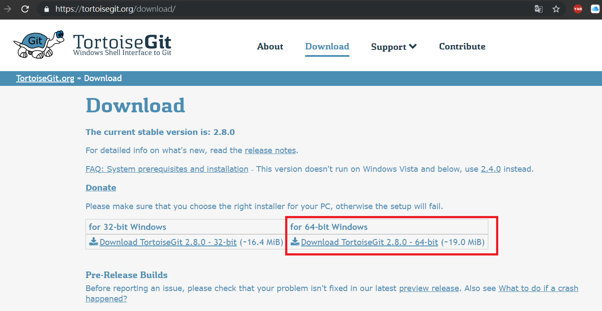
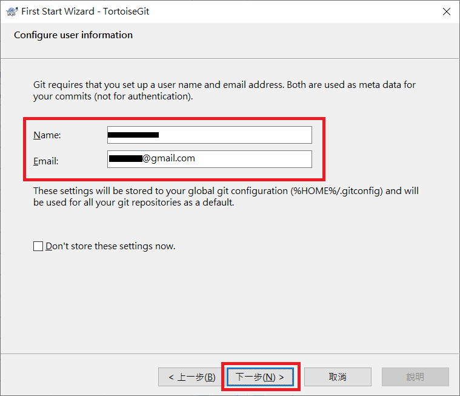

<!DOCTYPE html>
<html>
<head><meta name="generator" content="Hexo 3.8.0">
  <meta charset="utf-8">
  
  <title>Git安裝 | Mars&#39;s Blog</title>
  <meta name="viewport" content="width=device-width, initial-scale=1, maximum-scale=1">
  <meta name="description" content="一、說明版本控制在軟體開發中非常重要，有了版本控制不但可以記錄軟體變動脈絡，還能多線開發、合併、摘取、回遡、差異比對等功能，在團隊合作中尤其重要。 二、安裝2.1 Windows 下載並安裝 Git  基本上一直按「下一步」到底就可以了   下載Git GUI管理軟體 TortoiseGit  下載主程式和語言包 (建議不裝中文，看習慣英文)基本上設定個人資訊前一直按「下一步」就可以了    2.">
<meta name="keywords" content="dev,tools,git">
<meta property="og:type" content="article">
<meta property="og:title" content="Git安裝">
<meta property="og:url" content="https://blog.mars-world.net/2019/07/21/git-install/index.html">
<meta property="og:site_name" content="Mars&#39;s Blog">
<meta property="og:description" content="一、說明版本控制在軟體開發中非常重要，有了版本控制不但可以記錄軟體變動脈絡，還能多線開發、合併、摘取、回遡、差異比對等功能，在團隊合作中尤其重要。 二、安裝2.1 Windows 下載並安裝 Git  基本上一直按「下一步」到底就可以了   下載Git GUI管理軟體 TortoiseGit  下載主程式和語言包 (建議不裝中文，看習慣英文)基本上設定個人資訊前一直按「下一步」就可以了    2.">
<meta property="og:locale" content="default">
<meta property="og:image" content="https://blog.mars-world.net/2019/07/21/git-install/git-download-windows.png">
<meta property="og:image" content="https://blog.mars-world.net/2019/07/21/git-install/git-win-install-01.png">
<meta property="og:image" content="https://blog.mars-world.net/2019/07/21/git-install/git-win-install-02.png">
<meta property="og:updated_time" content="2019-08-18T00:41:20.991Z">
<meta name="twitter:card" content="summary">
<meta name="twitter:title" content="Git安裝">
<meta name="twitter:description" content="一、說明版本控制在軟體開發中非常重要，有了版本控制不但可以記錄軟體變動脈絡，還能多線開發、合併、摘取、回遡、差異比對等功能，在團隊合作中尤其重要。 二、安裝2.1 Windows 下載並安裝 Git  基本上一直按「下一步」到底就可以了   下載Git GUI管理軟體 TortoiseGit  下載主程式和語言包 (建議不裝中文，看習慣英文)基本上設定個人資訊前一直按「下一步」就可以了    2.">
<meta name="twitter:image" content="https://blog.mars-world.net/2019/07/21/git-install/git-download-windows.png">
  
  
  
    <link href="//fonts.googleapis.com/css?family=Source+Code+Pro" rel="stylesheet" type="text/css">
  

  <link rel="stylesheet" href="https://maxcdn.bootstrapcdn.com/bootstrap/3.3.6/css/bootstrap.min.css" integrity="sha384-1q8mTJOASx8j1Au+a5WDVnPi2lkFfwwEAa8hDDdjZlpLegxhjVME1fgjWPGmkzs7" crossorigin="anonymous">

  <link rel="stylesheet" href="https://maxcdn.bootstrapcdn.com/font-awesome/4.5.0/css/font-awesome.min.css" integrity="sha384-XdYbMnZ/QjLh6iI4ogqCTaIjrFk87ip+ekIjefZch0Y+PvJ8CDYtEs1ipDmPorQ+" crossorigin="anonymous">

  <link rel="stylesheet" href="/css/styles.css">
  

</head>
</html>
<body>
  <nav class="navbar navbar-inverse">
  <div class="container">
    <!-- Brand and toggle get grouped for better mobile display -->
    <div class="navbar-header">
      <button type="button" class="navbar-toggle collapsed" data-toggle="collapse" data-target="#main-menu-navbar" aria-expanded="false">
        <span class="sr-only">Toggle navigation</span>
        <span class="icon-bar"></span>
        <span class="icon-bar"></span>
        <span class="icon-bar"></span>
      </button>
      
    </div>

    <!-- Collect the nav links, forms, and other content for toggling -->
    <div class="collapse navbar-collapse" id="main-menu-navbar">
      <ul class="nav navbar-nav">
        
          <li><a class href="/index.html">Home</a></li>
        
          <li><a class href="/archives/">Archives</a></li>
        
          <li><a class href="https://github.com/marshung24">GitHub</a></li>
        
      </ul>

      <!--
      <ul class="nav navbar-nav navbar-right">
        
      </ul>
      -->
    </div><!-- /.navbar-collapse -->
  </div><!-- /.container-fluid -->
</nav>

  <div class="container">
    <div class="blog-header">
  <h1 class="blog-title">Mars&#39;s Blog</h1>
  
    <p class="lead blog-description">Mars&#39;s learning record</p>
  
</div>

    <div class="row">
        <div class="col-sm-8 blog-main">
          <article id="post-git-install" class="article article-type-post" itemscope itemprop="blogPost">

  <header class="article-header">
    
  
    <h1 class="article-title" itemprop="name">
      Git安裝
    </h1>
  


  </header>

  <div class="article-meta">
    <div class="article-datetime">
  <a href="/2019/07/21/git-install/" class="article-date"><time datetime="2019-07-21T02:42:29.000Z" itemprop="datePublished">2019-07-21</time></a>
</div>

    <div class="article-author">Mars Hung</div>
    
  <div class="article-category">
    <a class="article-category-link" href="/categories/tools/">tools</a>
  </div>


    <div class="article-reading">
  
  <span id="busuanzi_container_page_pv">文章閱讀量<span id="busuanzi_value_page_pv"></span>次</span>
  
</div>

  </div>
  <div class="article-inner">

    <div class="article-entry" itemprop="articleBody">
      
        
<div id="toc">
    <ol class="toc"><li class="toc-item toc-level-1"><a class="toc-link" href="#一、說明"><span class="toc-text">一、說明</span></a></li><li class="toc-item toc-level-1"><a class="toc-link" href="#二、安裝"><span class="toc-text">二、安裝</span></a><ol class="toc-child"><li class="toc-item toc-level-2"><a class="toc-link" href="#2-1-Windows"><span class="toc-text">2.1 Windows</span></a></li><li class="toc-item toc-level-2"><a class="toc-link" href="#2-2-Linux-Ubuntu16-04TLS"><span class="toc-text">2.2 Linux(Ubuntu16.04TLS)</span></a></li></ol></li><li class="toc-item toc-level-1"><a class="toc-link" href="#三、常用指令"><span class="toc-text">三、常用指令</span></a></li><li class="toc-item toc-level-1"><a class="toc-link" href="#四、參考"><span class="toc-text">四、參考</span></a></li></ol>
</div>

        <h1 id="一、說明"><a href="#一、說明" class="headerlink" title="一、說明"></a>一、說明</h1><p>版本控制在軟體開發中非常重要，有了版本控制不但可以記錄軟體變動脈絡，還能多線開發、合併、摘取、回遡、差異比對等功能，在團隊合作中尤其重要。</p>
<h1 id="二、安裝"><a href="#二、安裝" class="headerlink" title="二、安裝"></a>二、安裝</h1><h2 id="2-1-Windows"><a href="#2-1-Windows" class="headerlink" title="2.1 Windows"></a>2.1 Windows</h2><ul>
<li><p>下載並安裝 <a href="https://git-scm.com/" target="_blank" rel="noopener">Git</a><br></p>
<blockquote>
<p>基本上一直按「下一步」到底就可以了</p>
</blockquote>
</li>
<li><p>下載Git GUI管理軟體 <a href="https://tortoisegit.org/download/" target="_blank" rel="noopener">TortoiseGit</a></p>
<blockquote>
<p>下載主程式和語言包 (建議不裝中文，看習慣英文)<br><br>基本上設定個人資訊前一直按「下一步」就可以了<br></p>
</blockquote>
</li>
</ul>
<h2 id="2-2-Linux-Ubuntu16-04TLS"><a href="#2-2-Linux-Ubuntu16-04TLS" class="headerlink" title="2.2 Linux(Ubuntu16.04TLS)"></a>2.2 Linux(Ubuntu16.04TLS)</h2><ul>
<li><p><a href="https://git-scm.com/download/linux" target="_blank" rel="noopener">Git安裝</a></p>
<blockquote>
<p>Ubuntu16.04TLS預設安裝的git版本太舊，需使用其他套件源</p>
</blockquote>
<ul>
<li><p>安裝Git套件源</p>
<figure class="highlight shell"><table><tr><td class="gutter"><pre><span class="line">1</span><br><span class="line">2</span><br></pre></td><td class="code"><pre><span class="line"><span class="meta">$</span> sudo add-apt-repository ppa:git-core/ppa;</span><br><span class="line"><span class="meta">$</span> sudo apt-get update;</span><br></pre></td></tr></table></figure>
</li>
<li><p>安裝/更新Git</p>
<figure class="highlight shell"><table><tr><td class="gutter"><pre><span class="line">1</span><br></pre></td><td class="code"><pre><span class="line"><span class="meta">$</span> sudo apt-get install git;</span><br></pre></td></tr></table></figure>
</li>
<li><p>查看Git版本</p>
<figure class="highlight shell"><table><tr><td class="gutter"><pre><span class="line">1</span><br><span class="line">2</span><br></pre></td><td class="code"><pre><span class="line"><span class="meta">$</span> git --version</span><br><span class="line">git version 2.22.0</span><br></pre></td></tr></table></figure>
</li>
</ul>
</li>
<li><p>語系設定</p>
<figure class="highlight shell"><table><tr><td class="gutter"><pre><span class="line">1</span><br><span class="line">2</span><br><span class="line">3</span><br><span class="line">4</span><br></pre></td><td class="code"><pre><span class="line"><span class="meta">$</span> echo "export LESSCHARSET=utf-8;" | sudo tee -a ~/.bashrc</span><br><span class="line"><span class="meta">$</span> echo "export LESSCHARSET=utf-8;" | sudo tee -a /etc/bash.bashrc</span><br><span class="line"><span class="meta">$</span> echo "export LC_ALL=en_US.UTF-8;" | sudo tee -a ~/.bashrc</span><br><span class="line"><span class="meta">$</span> echo "export LC_ALL=en_US.UTF-8;" | sudo tee -a /etc/bash.bashrc</span><br></pre></td></tr></table></figure>
<blockquote>
<p>原因是 git log 預設是使用 less 這個工具來瀏覽，所以需要額外設定編碼。</p>
</blockquote>
</li>
<li><p>Git參數設定</p>
<figure class="highlight shell"><table><tr><td class="gutter"><pre><span class="line">1</span><br><span class="line">2</span><br><span class="line">3</span><br><span class="line">4</span><br><span class="line">5</span><br></pre></td><td class="code"><pre><span class="line"><span class="meta">#</span> 編輯git時使用vim編輯器</span><br><span class="line"><span class="meta">$</span> git config --global core.editor vim</span><br><span class="line"><span class="meta">#</span> 設定Git操作者的名子與信箱</span><br><span class="line"><span class="meta">$</span> git config --global user.name &#123;我的名子&#125;</span><br><span class="line"><span class="meta">$</span> git config --global user.email &#123;我的信箱&#125;</span><br></pre></td></tr></table></figure>
<blockquote>
<ul>
<li><strong>{我的名子}</strong>、<strong>{我的信箱}</strong>替換成自己的英文名子和電子信箱</li>
</ul>
</blockquote>
</li>
</ul>
<h1 id="三、常用指令"><a href="#三、常用指令" class="headerlink" title="三、常用指令"></a>三、常用指令</h1><ul>
<li>下載repository: git clone &lt;repo&gt; (repo格式：<a href="mailto:git@xxx.xx" target="_blank" rel="noopener">git@xxx.xx</a>:xxx/xxx.git)</li>
<li>查看記錄: git log</li>
<li>查看歷史記錄: git reflog<blockquote>
<p>如果誤操作時，可用此找查之前的記錄</p>
</blockquote>
</li>
<li>查看目前變動: git status</li>
<li>收藏變動: git stash</li>
<li>取出收藏: git stash pop</li>
<li>暫存變動: git add &lt;file&gt;</li>
<li>暫存全部變動: git add -u<blockquote>
<p>不含未處理過的檔案</p>
</blockquote>
</li>
<li>暫存全部變動: git add .<blockquote>
<p>含未處理過的檔案</p>
</blockquote>
</li>
<li>暫存路徑變動: git add &lt;dir&gt;<blockquote>
<p>含未處理過的檔案</p>
</blockquote>
</li>
<li>取消暫存變動: git reset HEAD &lt;file&gt;<blockquote>
<p>取消不小心 git add 的檔案</p>
</blockquote>
</li>
<li>提交: git commit</li>
<li>推送至遠端: git push<blockquote>
<p>強制推送: git push -f</p>
</blockquote>
</li>
<li>獲取遠端記錄: git fetch</li>
<li>獲取並合併: git pull &lt;branch&gt;</li>
<li>合併分支: git merge &lt;commit&gt;</li>
<li>變基: git rebase -i &lt;commit&gt;</li>
<li>切換分支: git checkout &lt;branch&gt;</li>
<li>清除變動檔案: git checkout &lt;file&gt;</li>
<li>清除分支所有變動: git checkout – .</li>
<li>變更工作目錄至commit: git reset &lt;commit&gt;<blockquote>
<p>只移動branch位置，不變動檔案</p>
</blockquote>
</li>
<li>變更工作目錄至commit: git reset –hard &lt;commit&gt;<blockquote>
<p>移動branch位置，並重置檔案</p>
</blockquote>
</li>
<li>建立新分支: git branch</li>
<li>建立tag: git tag &lt;tag&gt;</li>
<li>推送tag: git push origin &lt;tag&gt;<blockquote>
<p>同等:  git push origin refs/tags/&lt;tag&gt;</p>
</blockquote>
</li>
<li>刪除tag: git tag -d &lt;tag&gt;</li>
<li>刪除遠端tag: git push origin refs/tags/&lt;tag&gt;<blockquote>
<p>必需先把本地tag刪除(推送空tag)</p>
</blockquote>
</li>
</ul>
<h1 id="四、參考"><a href="#四、參考" class="headerlink" title="四、參考"></a>四、參考</h1><ul>
<li><a href="https://git-scm.com/book/zh-tw/v2" target="_blank" rel="noopener">git-scm</a></li>
<li><a href="https://backlog.com/git-tutorial/tw/" target="_blank" rel="noopener">連猴子都能懂的Git入門指南</a></li>
</ul>

      
    </div>

    
      

    

    <footer class="article-footer">
      <a data-url="https://blog.mars-world.net/2019/07/21/git-install/" data-id="cjztyjbj2000klguf2y5eslap" class="article-share-link">
        <i class="fa fa-share"></i> Share
      </a>
      
      
  <ul class="article-tag-list"><li class="article-tag-list-item"><a class="article-tag-list-link" href="/tags/dev/">dev</a></li><li class="article-tag-list-item"><a class="article-tag-list-link" href="/tags/git/">git</a></li><li class="article-tag-list-item"><a class="article-tag-list-link" href="/tags/tools/">tools</a></li></ul>


    </footer>
  </div>
  
    
<ul id="article-nav" class="nav nav-pills nav-justified">
  
  <li role="presentation">
    <a href="/2019/07/20/crud-design-01/" id="article-nav-older" class="article-nav-link-wrap">
      <i class="fa fa-chevron-left pull-left"></i>
      <span class="article-nav-link-title">CRUD表單設計 Day-01 環境建置</span>
    </a>
  </li>
  
  
  <li role="presentation">
    <a href="/2019/07/21/composer-install/" id="article-nav-newer" class="article-nav-link-wrap">
      <span class="article-nav-link-title">Composer安裝</span>
      <i class="fa fa-chevron-right pull-right"></i>
    </a>
  </li>
  
</ul>


  
</article>


        </div>
        <div class="col-sm-3 col-sm-offset-1 blog-sidebar">
          
  
  <div class="sidebar-module">
    <h4>Recents</h4>
    <ul class="sidebar-module-list">
      
        <li>
          <a href="/2019/08/18/crud-design-04/">CRUD表單設計 Day-04 Javascript</a>
        </li>
      
        <li>
          <a href="/2019/08/17/crud-design-03/">CRUD表單設計 Day-03 安裝Bootstrap4</a>
        </li>
      
        <li>
          <a href="/2019/08/16/php-training/">PHP培訓-CRUD</a>
        </li>
      
        <li>
          <a href="/2019/08/16/crud-design-02/">CRUD表單設計 Day-02 安裝PHP Framework</a>
        </li>
      
        <li>
          <a href="/2019/07/24/account-security-setting/">帳號安全設定</a>
        </li>
      
    </ul>
  </div>


  
  <div class="sidebar-module">
    <h4>Archives</h4>
    <ul class="sidebar-module-list"><li class="sidebar-module-list-item"><a class="sidebar-module-list-link" href="/archives/2019/08/">August 2019</a><span class="sidebar-module-list-count">4</span></li><li class="sidebar-module-list-item"><a class="sidebar-module-list-link" href="/archives/2019/07/">July 2019</a><span class="sidebar-module-list-count">6</span></li><li class="sidebar-module-list-item"><a class="sidebar-module-list-link" href="/archives/2019/06/">June 2019</a><span class="sidebar-module-list-count">1</span></li><li class="sidebar-module-list-item"><a class="sidebar-module-list-link" href="/archives/2019/05/">May 2019</a><span class="sidebar-module-list-count">4</span></li><li class="sidebar-module-list-item"><a class="sidebar-module-list-link" href="/archives/2019/04/">April 2019</a><span class="sidebar-module-list-count">2</span></li><li class="sidebar-module-list-item"><a class="sidebar-module-list-link" href="/archives/2017/09/">September 2017</a><span class="sidebar-module-list-count">2</span></li></ul>
  </div>


  
  <div class="sidebar-module">
    <h4>Categories</h4>
    <ul class="sidebar-module-list"><li class="sidebar-module-list-item"><a class="sidebar-module-list-link" href="/categories/doc/">doc</a><span class="sidebar-module-list-count">2</span></li><li class="sidebar-module-list-item"><a class="sidebar-module-list-link" href="/categories/info/">info</a><span class="sidebar-module-list-count">3</span></li><li class="sidebar-module-list-item"><a class="sidebar-module-list-link" href="/categories/security/">security</a><span class="sidebar-module-list-count">1</span></li><li class="sidebar-module-list-item"><a class="sidebar-module-list-link" href="/categories/server/">server</a><span class="sidebar-module-list-count">1</span></li><li class="sidebar-module-list-item"><a class="sidebar-module-list-link" href="/categories/test/">test</a><span class="sidebar-module-list-count">1</span></li><li class="sidebar-module-list-item"><a class="sidebar-module-list-link" href="/categories/tools/">tools</a><span class="sidebar-module-list-count">5</span></li><li class="sidebar-module-list-item"><a class="sidebar-module-list-link" href="/categories/training/">training</a><span class="sidebar-module-list-count">5</span></li><li class="sidebar-module-list-item"><a class="sidebar-module-list-link" href="/categories/web/">web</a><span class="sidebar-module-list-count">1</span></li></ul>
  </div>


  
  <div class="sidebar-module">
    <h4>Tags</h4>
    <ul class="sidebar-module-list"><li class="sidebar-module-list-item"><a class="sidebar-module-list-link" href="/tags/account/">account</a><span class="sidebar-module-list-count">1</span></li><li class="sidebar-module-list-item"><a class="sidebar-module-list-link" href="/tags/ajax/">ajax</a><span class="sidebar-module-list-count">1</span></li><li class="sidebar-module-list-item"><a class="sidebar-module-list-link" href="/tags/blog/">blog</a><span class="sidebar-module-list-count">1</span></li><li class="sidebar-module-list-item"><a class="sidebar-module-list-link" href="/tags/bootstrap/">bootstrap</a><span class="sidebar-module-list-count">1</span></li><li class="sidebar-module-list-item"><a class="sidebar-module-list-link" href="/tags/codeingiter/">codeingiter</a><span class="sidebar-module-list-count">1</span></li><li class="sidebar-module-list-item"><a class="sidebar-module-list-link" href="/tags/coding/">coding</a><span class="sidebar-module-list-count">5</span></li><li class="sidebar-module-list-item"><a class="sidebar-module-list-link" href="/tags/composer/">composer</a><span class="sidebar-module-list-count">1</span></li><li class="sidebar-module-list-item"><a class="sidebar-module-list-link" href="/tags/debug/">debug</a><span class="sidebar-module-list-count">1</span></li><li class="sidebar-module-list-item"><a class="sidebar-module-list-link" href="/tags/dev/">dev</a><span class="sidebar-module-list-count">17</span></li><li class="sidebar-module-list-item"><a class="sidebar-module-list-link" href="/tags/doc/">doc</a><span class="sidebar-module-list-count">3</span></li><li class="sidebar-module-list-item"><a class="sidebar-module-list-link" href="/tags/env/">env</a><span class="sidebar-module-list-count">1</span></li><li class="sidebar-module-list-item"><a class="sidebar-module-list-link" href="/tags/git/">git</a><span class="sidebar-module-list-count">2</span></li><li class="sidebar-module-list-item"><a class="sidebar-module-list-link" href="/tags/github/">github</a><span class="sidebar-module-list-count">1</span></li><li class="sidebar-module-list-item"><a class="sidebar-module-list-link" href="/tags/hexo/">hexo</a><span class="sidebar-module-list-count">1</span></li><li class="sidebar-module-list-item"><a class="sidebar-module-list-link" href="/tags/ide/">ide</a><span class="sidebar-module-list-count">1</span></li><li class="sidebar-module-list-item"><a class="sidebar-module-list-link" href="/tags/info/">info</a><span class="sidebar-module-list-count">3</span></li><li class="sidebar-module-list-item"><a class="sidebar-module-list-link" href="/tags/javascript/">javascript</a><span class="sidebar-module-list-count">2</span></li><li class="sidebar-module-list-item"><a class="sidebar-module-list-link" href="/tags/jquery/">jquery</a><span class="sidebar-module-list-count">1</span></li><li class="sidebar-module-list-item"><a class="sidebar-module-list-link" href="/tags/linux/">linux</a><span class="sidebar-module-list-count">2</span></li><li class="sidebar-module-list-item"><a class="sidebar-module-list-link" href="/tags/mysql/">mysql</a><span class="sidebar-module-list-count">1</span></li><li class="sidebar-module-list-item"><a class="sidebar-module-list-link" href="/tags/nginx/">nginx</a><span class="sidebar-module-list-count">2</span></li><li class="sidebar-module-list-item"><a class="sidebar-module-list-link" href="/tags/nodejs/">nodejs</a><span class="sidebar-module-list-count">1</span></li><li class="sidebar-module-list-item"><a class="sidebar-module-list-link" href="/tags/php/">php</a><span class="sidebar-module-list-count">8</span></li><li class="sidebar-module-list-item"><a class="sidebar-module-list-link" href="/tags/phpunit/">phpunit</a><span class="sidebar-module-list-count">1</span></li><li class="sidebar-module-list-item"><a class="sidebar-module-list-link" href="/tags/security/">security</a><span class="sidebar-module-list-count">1</span></li><li class="sidebar-module-list-item"><a class="sidebar-module-list-link" href="/tags/server/">server</a><span class="sidebar-module-list-count">1</span></li><li class="sidebar-module-list-item"><a class="sidebar-module-list-link" href="/tags/setting/">setting</a><span class="sidebar-module-list-count">1</span></li><li class="sidebar-module-list-item"><a class="sidebar-module-list-link" href="/tags/sop/">sop</a><span class="sidebar-module-list-count">2</span></li><li class="sidebar-module-list-item"><a class="sidebar-module-list-link" href="/tags/standard/">standard</a><span class="sidebar-module-list-count">2</span></li><li class="sidebar-module-list-item"><a class="sidebar-module-list-link" href="/tags/style/">style</a><span class="sidebar-module-list-count">1</span></li><li class="sidebar-module-list-item"><a class="sidebar-module-list-link" href="/tags/test/">test</a><span class="sidebar-module-list-count">2</span></li><li class="sidebar-module-list-item"><a class="sidebar-module-list-link" href="/tags/tools/">tools</a><span class="sidebar-module-list-count">5</span></li><li class="sidebar-module-list-item"><a class="sidebar-module-list-link" href="/tags/trace/">trace</a><span class="sidebar-module-list-count">1</span></li><li class="sidebar-module-list-item"><a class="sidebar-module-list-link" href="/tags/training/">training</a><span class="sidebar-module-list-count">5</span></li><li class="sidebar-module-list-item"><a class="sidebar-module-list-link" href="/tags/unit-test/">unit test</a><span class="sidebar-module-list-count">1</span></li><li class="sidebar-module-list-item"><a class="sidebar-module-list-link" href="/tags/vscode/">vscode</a><span class="sidebar-module-list-count">1</span></li><li class="sidebar-module-list-item"><a class="sidebar-module-list-link" href="/tags/web/">web</a><span class="sidebar-module-list-count">7</span></li></ul>
  </div>


        </div>
    </div>
  </div>
  <footer class="blog-footer">
  <div class="container">
    <div id="footer-info" class="inner">
      &copy; 2019 Mars Hung Powered by <a href="http://hexo.io/" target="_blank">Hexo</a>
    </div>
  
  
    <script async src="//busuanzi.ibruce.info/busuanzi/2.3/busuanzi.pure.mini.js"></script>
    <span id="busuanzi_container_site_pv">總訪問量<span id="busuanzi_value_site_pv"></span>次</span>
    <span class="post-meta-divider">|</span>
    <span id="busuanzi_container_site_uv">訪客數<span id="busuanzi_value_site_uv"></span>人</span>
  
  </div>
</footer>

  

<script src="https://ajax.googleapis.com/ajax/libs/jquery/2.1.4/jquery.min.js" integrity="sha384-8gBf6Y4YYq7Jx97PIqmTwLPin4hxIzQw5aDmUg/DDhul9fFpbbLcLh3nTIIDJKhx" crossorigin="anonymous"></script>

<script src="https://maxcdn.bootstrapcdn.com/bootstrap/3.3.6/js/bootstrap.min.js" integrity="sha384-0mSbJDEHialfmuBBQP6A4Qrprq5OVfW37PRR3j5ELqxss1yVqOtnepnHVP9aJ7xS" crossorigin="anonymous"></script>


<script src="/js/script.js"></script>

</body>
</html>
